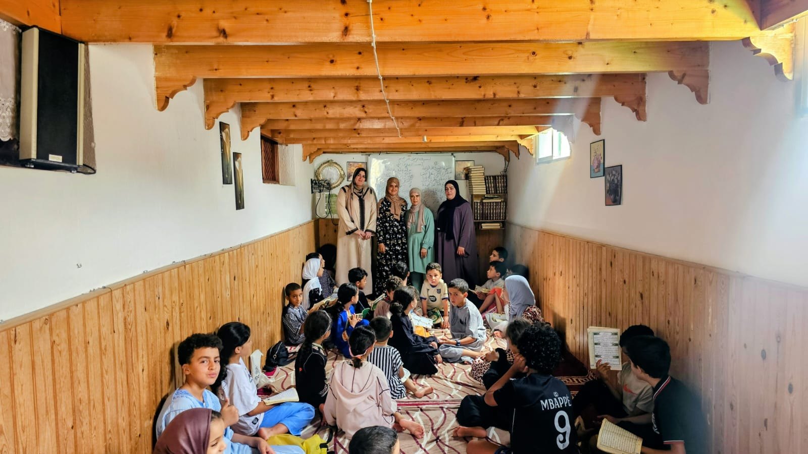
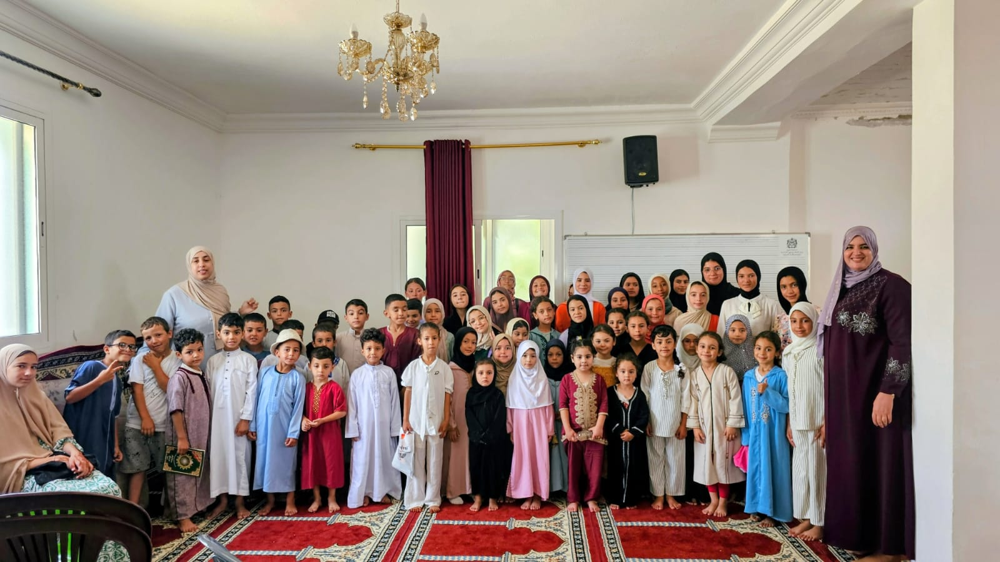
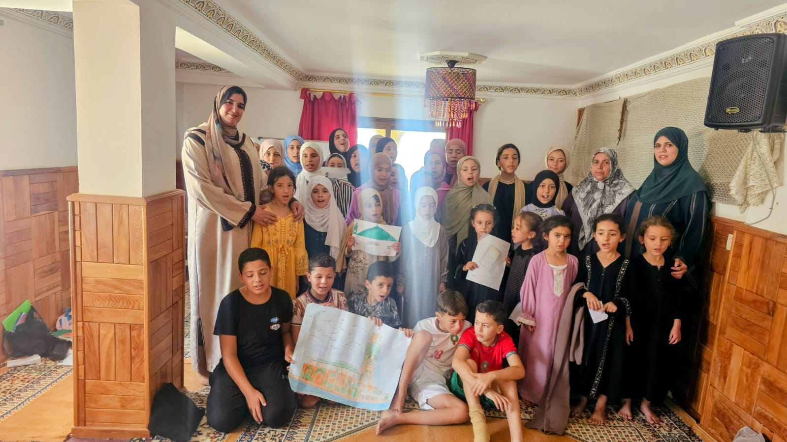
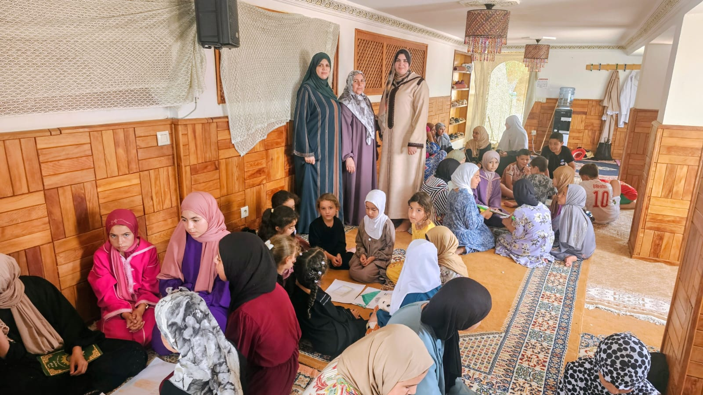
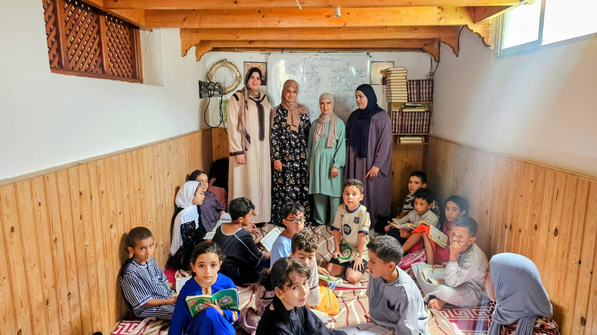
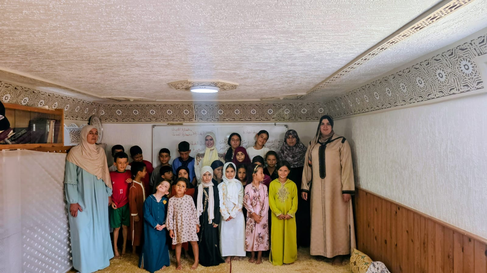

االأنشطة التربوية للدكتورة عائشة الطويل






في إطار الأنشطة العلمية والتربوية والثقافية الرامية إلى ترسيخ القيم الإسلامية الأصيلة في نفوس الناشئة، وتنزيلا لمضامين خطة "تسديد التبليغ من أجل حياة طيبة"، ينظم المجلس العلمي المحلي لإقليم الفحص أنجرة، بتنسيق مع المندوبية الإقليمية للشؤون الإسلامية، وبمشاركة الخلية المكلفة بشؤون المرأة وقضايا الأسرة، النسخة الثالثة من "البرنامج الصيفي للطفولة وتحفيظ القرآن الكريم" لفائدة أطفال الإقليم وأبناء الجالية المغربية المقيمة بالخارج.
وفي هذا السياق، قامت الدكتورة عائشة الطويل، عضو المجلس العلمي المحلي لإقليم الفحص أنجرة، بزيارة تفقدية لعدد من المراكز المستفيدة من البرنامج بكل من جماعات البحراويين، وملوسة، وقصر الصغير، وذلك يومي الاثنين 5 صفر 1448هـ الموافق لـ20 يوليوز 2026م، والثلاثاء 6 صفر 1448هـ الموافق لـ21 يوليوز 2026م، قصد الاطلاع على سير البرنامج، والوقوف على مدى تحقيقه لأهدافه التربوية والتعليمية.
وقد شملت الزيارات المراكز الآتية:
وقد شكلت هذه الزيارة مناسبة للوقوف على مستوى انخراط الأطفال في أنشطة البرنامج، والإشادة بالجهود القيمة التي تبذلها المرشدات والمحفظات في تحفيظ كتاب الله تعالى، وترسيخ القيم الدينية والوطنية، وتنمية الجوانب التربوية والسلوكية لدى الناشئة، بما يسهم في تحقيق الأهداف النبيلة لهذا البرنامج الصيفي
بتاريخ 21 يوليوز 2026م،